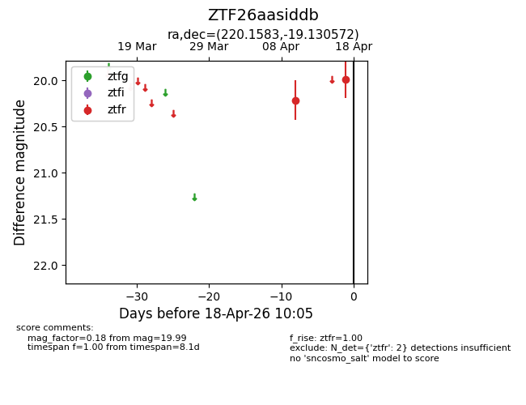
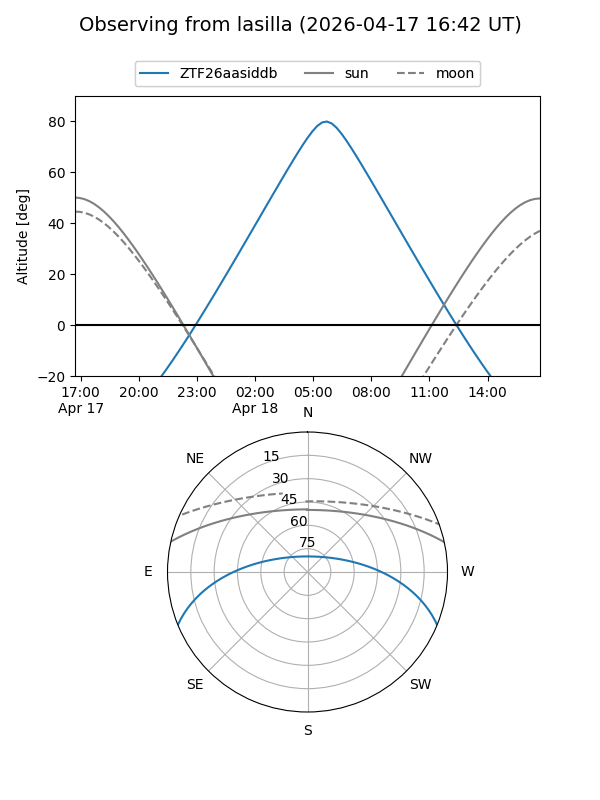
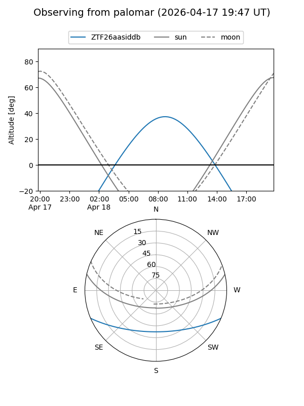

ZTF26aasiddb
Target ZTF26aasiddb at 2026-04-18 10:10
Aliases and brokers:
FINK: link
Lasair: link
ALeRCE: link
alt names
ZTF26aasiddb (ztf,fink_ztf)
Coordinates:
equatorial (ra, dec) = 220.1583,-19.13057
equatorial (HMS+DMS) = 14:40:38.00,-19:07:50.06
galactic (l, b) = (335.6493,+36.70925)
Flags:
Photometry:
last ztfr=19.99
2 ztfr detections
Lightcurve

Visibility


Additional plots